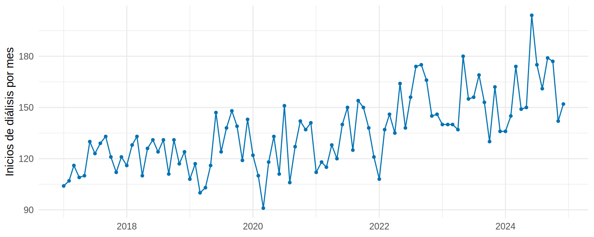
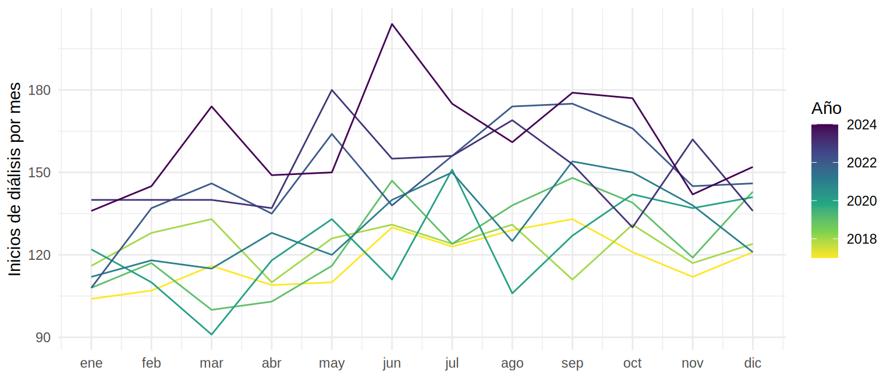
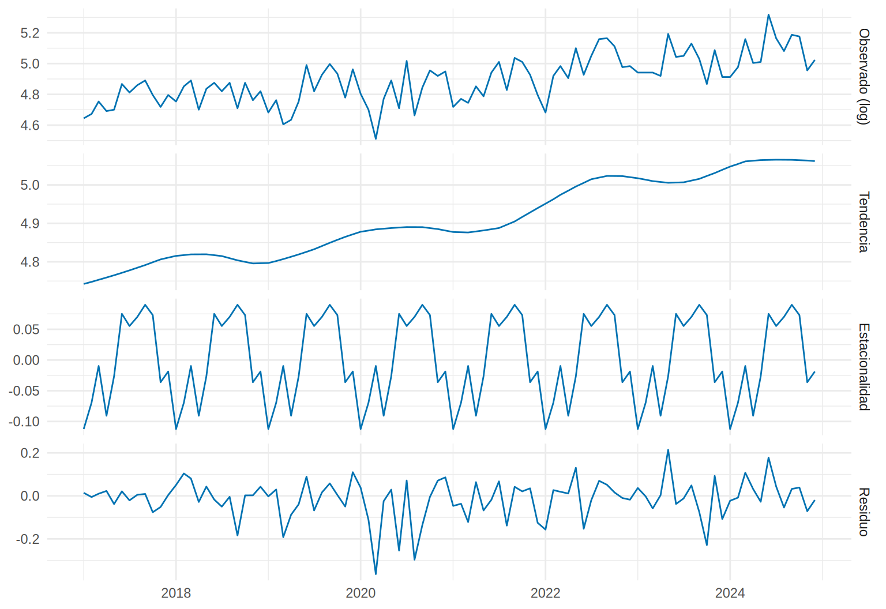
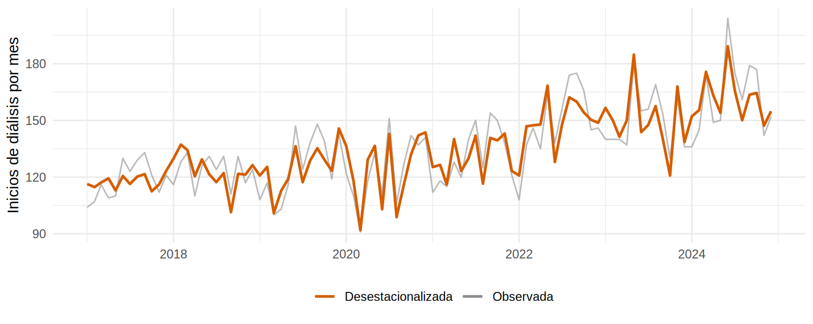
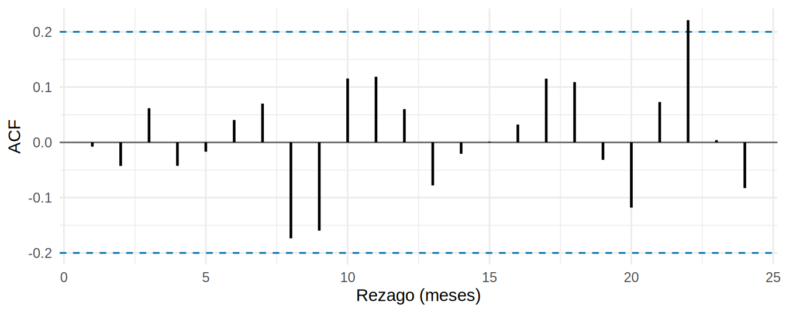

library(tidyverse)
library(forecast)
source("R/funciones_extra_cap15.R")
serie <- read_csv("Bases/serie_inicio_dialisis.csv", show_col_types = FALSE)
# Región de control (sin programa): la serie "limpia" que usaremos para aprender los componentes
control <- serie |> filter(region == "Control") |> preparar_serie()Componentes de una serie de tiempo: tendencia, estacionalidad y ruido
Nota🩺 Escenario
Diriges el servicio de nefrología de una región grande y llevas ocho años anotando cuántas personas inician diálisis cada mes. En julio de 2024 ingresaron 175 pacientes; en enero de 2024, 136. La gerencia pregunta: «¿estamos creciendo o es solo invierno?». Para responder hay que separar lo que sube con los años, lo que se repite cada año y lo que es puro azar.
Lo que vamos a hacer
- Reconocer los componentes de una serie mensual: tendencia, estacionalidad, ciclo y ruido.
- Separarlos con la descomposición STL y leer cada pieza.
- Compararlos con la verdad simulada para saber cuánto confiar en ellos.
Paso 1. Los datos (simulados)
Trabajaremos con serie_inicio_dialisis, una base simulada con los inicios mensuales de diálisis de enero de 2017 a diciembre de 2024 en dos regiones. En este subcapítulo usamos solo la región Control, donde no ocurre ninguna intervención.
control |> select(fecha, casos, poblacion, tasa) |> head(4)# A tibble: 4 × 4
fecha casos poblacion tasa
<date> <dbl> <dbl> <dbl>
1 2017-01-01 104 4000000 2.6
2 2017-02-01 107 4000999 2.67
3 2017-03-01 116 4001998 2.90
4 2017-04-01 109 4002997 2.72casos es el número de personas que inician diálisis en el mes; tasa, esos casos por 100 000 habitantes (casos / poblacion * 100 000). La población importa porque una región que crece tendrá más casos aunque el riesgo individual no cambie (lo veremos en 15.2).
Paso 2. ¿Qué es una serie de tiempo y qué tiene dentro?
Una serie de tiempo es una medición repetida a intervalos regulares (cada mes, cada semana). Lo que la distingue de una tabla común es que el orden importa: el dato de junio se parece más al de mayo que al de un mes al azar. Esa “memoria” es la razón de que casi todo el capítulo gire en torno a ella.
Casi toda serie mensual se puede pensar como una mezcla de cuatro piezas:
- Tendencia: la dirección de largo plazo (¿sube, baja, se estanca?). Por ejemplo, el envejecimiento de la población hace subir los inicios de diálisis.
- Estacionalidad: un patrón que se repite con período fijo (cada año). Por ejemplo, más ingresos en invierno por infecciones y descompensaciones.
- Ciclo: oscilaciones más lentas y sin período fijo (años de bonanza y de recortes presupuestales). En series cortas como esta casi siempre se confunde con la tendencia, por eso los métodos hablan de “tendencia-ciclo”.
- Ruido (o componente irregular): lo que queda: azar, brotes, errores de registro.
Las piezas pueden sumarse o multiplicarse:
\[ \text{aditivo: } y_t = T_t + S_t + R_t \qquad\qquad \text{multiplicativo: } y_t = T_t \times S_t \times R_t \]
En conteos que crecen, la estacionalidad suele ser proporcional (julio es un 10 % más alto que el promedio, sea el año 2017 o el 2024): es multiplicativa. Truco práctico: al tomar logaritmos, un modelo multiplicativo se vuelve aditivo, porque \(\ln(T \times S \times R) = \ln T + \ln S + \ln R\). Eso haremos.
Paso 3. Mirar antes de modelar
Primero la serie cruda. Con ggplot basta:
ggplot(control, aes(fecha, casos)) +
geom_line(colour = "#0072B2") +
geom_point(colour = "#0072B2", size = 1) +
labs(x = NULL, y = "Inicios de diálisis por mes") +
theme_minimal(base_size = 11)
Qué vemos. Hay una subida lenta a lo largo de los años y un “sube y baja” que parece repetirse. Pero a ojo es difícil separar qué es cada cosa. Para ver la estacionalidad conviene apilar los años unos sobre otros, un año por línea: si las líneas suben y bajan en los mismos meses, hay estacionalidad.
ggplot(control, aes(mes, casos, group = anio, colour = anio)) + # una línea por año
geom_line() +
scale_x_continuous(breaks = 1:12, labels = c("ene", "feb", "mar", "abr", "may", "jun",
"jul", "ago", "sep", "oct", "nov", "dic")) +
scale_colour_viridis_c(name = "Año", direction = -1) + # años recientes = colores claros
labs(x = NULL, y = "Inicios de diálisis por mes") +
theme_minimal(base_size = 11)
Los años más recientes (colores claros) quedan por encima de los primeros: es la tendencia. Y las líneas tienden a quedar más altas de mitad de año en adelante que de enero a abril: es la estacionalidad. (El paquete forecast tiene ggseasonplot(), que hace este mismo gráfico sobre un objeto ts.)
Paso 4. Separar los componentes: STL
STL (Seasonal and Trend decomposition using Loess) es el método de descomposición más usado hoy: alisa la serie con curvas locales (loess) para estimar la tendencia y la estacionalidad, y deja el resto como residuo. Se pide con stl() y, para que sea aditivo, la aplicamos al logaritmo de los casos:
y <- ts(control$casos, start = c(2017, 1), frequency = 12) # objeto ts: inicio ene-2017, datos mensuales (12 por año)
fit <- stl(log(y), s.window = "periodic", robust = TRUE)
# s.window = "periodic": la estacionalidad es idéntica cada año
# robust = TRUE: un mes atípico (un brote, un error de registro) no arrastra la tendencia
comp <- as_tibble(fit$time.series) |> # columnas: seasonal, trend, remainder
mutate(fecha = control$fecha, observado = log(control$casos))Para dibujar las cuatro piezas en una sola figura:
comp |>
pivot_longer(c(observado, trend, seasonal, remainder), names_to = "componente", values_to = "valor") |>
mutate(componente = factor(componente, levels = c("observado", "trend", "seasonal", "remainder"),
labels = c("Observado (log)", "Tendencia", "Estacionalidad", "Residuo"))) |>
ggplot(aes(fecha, valor)) +
geom_line(colour = "#0072B2") +
facet_grid(componente ~ ., scales = "free_y") +
labs(x = NULL, y = NULL) +
theme_minimal(base_size = 11)
Ahora leemos las cifras, no solo el dibujo. La estacionalidad está en escala log, así que exp() la convierte en “% por encima o por debajo del promedio”:
meses <- c("enero", "febrero", "marzo", "abril", "mayo", "junio", "julio", "agosto",
"septiembre", "octubre", "noviembre", "diciembre")
est_mes <- comp |> mutate(mes = rep(1:12, times = 8)) |>
group_by(mes) |> summarise(factor = exp(mean(seasonal)) - 1) # % sobre/bajo el promedio anual
est_mes |> mutate(mes = meses[mes], factor = round(100 * factor, 1)) |> t() [,1] [,2] [,3] [,4] [,5] [,6] [,7] [,8]
mes "enero" "febrero" "marzo" "abril" "mayo" "junio" "julio" "agosto"
factor "-10.6" " -6.7" " -1.0" " -8.7" " -2.6" " 7.8" " 5.7" " 7.3"
[,9] [,10] [,11] [,12]
mes "septiembre" "octubre" "noviembre" "diciembre"
factor " 9.4" " 7.6" " -3.6" " -1.9" pico <- est_mes |> slice_max(factor); valle <- est_mes |> slice_min(factor)
crec_anual <- exp(12 * (comp$trend[96] - comp$trend[1]) / 95) - 1 # crecimiento anual medio de la tendenciaQué vemos.
- Estacionalidad: el mes más alto es septiembre (9.4 % por encima del promedio) y el más bajo, enero (-10.6 %). La forma general es la simulada (más ingresos a mitad de año, menos de enero a abril, con una amplitud de unos ±10 %), pero cada mes se estima con solo ocho observaciones, así que el pico individual se desplaza un poco (la verdad es julio). En 15.2 resumiremos la estacionalidad con una curva suave, que es más estable.
- Tendencia: crece alrededor de 4.1 % al año. La verdad es +0.4 % mensual, o sea +4.9 % al año. Que no coincida exactamente no es un fallo: la serie es una sola realización del azar.
- Residuo: lo que sobra oscila alrededor de 0 sin un patrón evidente (desviación estándar de 0.09 en escala log, es decir, ± 10 % mes a mes).
Paso 5. Quitar la estacionalidad para ver la tendencia
Si restamos la estacionalidad a la serie obtenemos la serie desestacionalizada: la que usarías para decir «¿estamos creciendo?» sin que el invierno te engañe.
comp <- comp |> mutate(desestacionalizada = exp(observado - seasonal)) # de vuelta a casos
ggplot(comp, aes(fecha)) +
geom_line(aes(y = exp(observado), colour = "Observada"), alpha = 0.6) +
geom_line(aes(y = desestacionalizada, colour = "Desestacionalizada"), linewidth = 0.9) +
scale_colour_manual(values = c(Observada = "grey55", Desestacionalizada = "#D55E00"), name = NULL) +
labs(x = NULL, y = "Inicios de diálisis por mes") +
theme_minimal(base_size = 11) + theme(legend.position = "bottom")
Otra forma, sin modelo, de esquivar la estacionalidad es comparar cada mes con el mismo mes del año anterior (variación interanual). La estacionalidad se cancela porque comparas julio con julio:
control |>
mutate(var_interanual = casos / lag(casos, 12) - 1) |> # lag(, 12): el mismo mes un año antes
filter(fecha >= "2024-01-01") |>
summarise(promedio_2024 = mean(var_interanual)) |>
mutate(promedio_2024 = round(100 * promedio_2024, 1))# A tibble: 1 × 1
promedio_2024
<dbl>
1 9.1En 2024 los ingresos mensuales fueron, en promedio, un 9.1 % más altos que los del mismo mes de 2023. Esa es una respuesta mucho más honesta a «¿estamos creciendo?» que comparar julio con enero. Pero es la comparación de un solo par de años: el azar de 2023 y de 2024 pesa mucho (la tendencia estimada con los ocho años, 4.1 % anual, es más estable).
Paso 6. ¿El residuo es de verdad “ruido”?
Si la tendencia y la estacionalidad capturaron todo lo sistemático, el residuo debería parecerse a un ruido blanco: valores sin relación entre un mes y el siguiente. Lo comprobamos con la función de autocorrelación (ACF) —la correlación del residuo con él mismo desplazado 1, 2, 3… meses— y con la prueba de Ljung-Box (hipótesis nula: no hay autocorrelación):
ggacf(comp$remainder, lag_max = 24)
Box.test(comp$remainder, lag = 12, type = "Ljung-Box")
Box-Ljung test
data: comp$remainder
X-squared = 10.889, df = 12, p-value = 0.5385Ninguna barra sale de las líneas punteadas (que marcan lo que se esperaría por azar) y la prueba de Ljung-Box da p = 0.54: no hay evidencia de memoria en el residuo. En esta región el ruido se comporta. No siempre será así (en 15.4 veremos una serie cuyo residuo conserva memoria y qué hacer con ella).
Tip💡 La misma descomposición con
feasts (familia tsibble)
Con el paquete feasts (y tsibble), el enfoque de Forecasting: Principles and Practice (Hyndman y Athanasopoulos), la descomposición se escribe en tres líneas. Código no verificado en el entorno de pruebas del libro; la versión de arriba, con stl() de R base, es la que se ejecuta aquí.
library(tsibble)
library(feasts)
control |>
mutate(mes_ts = yearmonth(fecha)) |> # índice mensual de tsibble
as_tsibble(index = mes_ts) |>
model(STL(log(casos) ~ season(window = "periodic"), robust = TRUE)) |>
components() |>
autoplot()
Advertencia⚠️ Trampas frecuentes
- Confundir estacionalidad con tendencia. Comparar un mes con el anterior mezcla ambas: de enero a julio «sube» por estacionalidad aunque nada haya cambiado. Compara con el mismo mes del año previo o usa la serie desestacionalizada.
- Creer que la “tendencia” de STL es una causa. STL describe, no explica: dentro de la tendencia caben el envejecimiento, un cambio de política, una pandemia y un cambio en la definición del registro. Separarlos es el tema de 15.3 y 15.5.
Importante🎯 En resumen
- Una serie de tiempo se descompone en tendencia, estacionalidad, ciclo (que en series cortas se funde con la tendencia) y ruido.
- En conteos que crecen, la estacionalidad es proporcional: se trabaja en logaritmos para volverla aditiva.
- STL (
stl()) separa las piezas; cons.window = "periodic"la estacionalidad es igual cada año y conrobust = TRUEse protege de datos atípicos. - Para saber si «crecemos», usa la serie desestacionalizada o la comparación interanual, nunca mes contra mes.
- El residuo debe parecer ruido blanco (ACF sin barras fuera de banda; Ljung-Box no significativo). Si no, queda información sin modelar.
Ejercicio
- Repite la descomposición con la región Intervenida. ¿Qué diferencia notas en la tendencia a partir de 2021? (No olvides que ahí sí hubo un programa: lo analizaremos en 15.3.)
- Cambia a
s.window = 13(estacionalidad que puede variar año a año). ¿Cambia el patrón estacional? ¿Y el residuo? - Calcula la descomposición de la tasa por 100 000 habitantes (
tasa) en lugar de los casos. ¿Qué cambia en la tendencia y por qué?